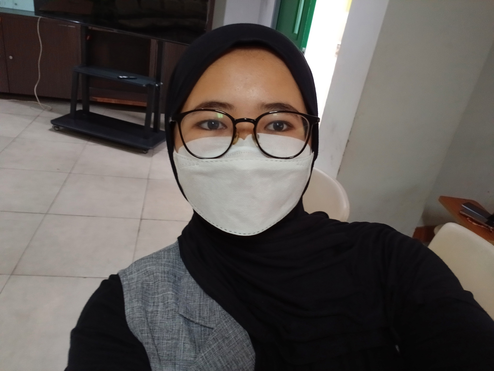

Saya adalah mahasiswa yang tertarik dalam pengembangan web.

Saya adalah mahasiswa di bidang Informatika yang memiliki minat dalam pengembangan web, khususnya pada bagian front-end development. Saya terbiasa menggunakan HTML, CSS, dan JavaScript untuk membangun tampilan website yang responsif dan user-friendly. Selain itu, saya juga memiliki pengalaman dalam pengolahan data dan pembuatan model sederhana dalam machine learning. Saya senang mempelajari hal baru dan terus mengembangkan kemampuan saya melalui berbagai proyek dan tugas perkuliahan. Dengan kemampuan yang saya miliki, saya berharap dapat menciptakan solusi digital yang bermanfaat dan menarik secara visual.
Website untuk melakukan pemesanan layanan cukur, baik di tempat maupun ke rumah, serta pengelolaan data oleh admin.
Website layanan kebersihan yang dilengkapi dengan fitur pemesanan online, memungkinkan pengguna memilih layanan dan melakukan booking dengan mudah.
Sistem pengenalan wajah berbasis webcam menggunakan metode LBPH dengan preprocessing Haar Cascade dan grayscale untuk meningkatkan akurasi deteksi.
Email: merinkharista@gmail.com